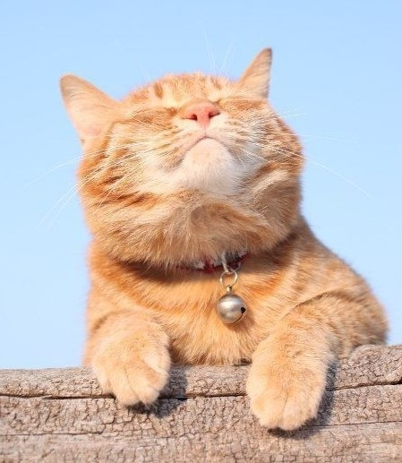
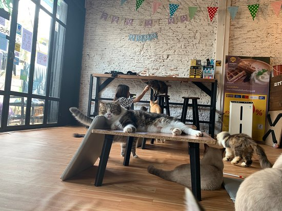

INFORMATION
2021.10.15
到哪裡也和暖暖的喵咪在一起
與漫畫家山野玲玲合作 ! 佈滿貓咪的抓毛絨外套 ~ .....
2021.10.15
倒水的瞬間……會心一笑♪看著魚的貓咪好可愛
好想吃魚～ 像是在水族館盯著魚缸的貓咪玻璃杯之會 .....
2021.10.15
由天然材料製成的耐熱玻璃 x 時尚
am & be HARIO 咖啡服務器 400 橄欖木 .....

關於NEKO-FFEE
Since 2020
Since 2020
日文中的貓為「猫（ねこ、neko）」，據說是古時候日本人稱之「ネズミを捕る子（Nezumi-o-toru-ko、捕鼠者）」，取前後的發音而拼成「ネ（ne）」與「子（ko）」。 貓咪咖啡館（Cat cafe）是指主要以貓咪為主題的咖啡館。那裡沒有工作時的疲憊和焦慮，沒有學習時的緊張和辛苦，因為在貓咪面前，所有的煩惱和孤獨感都會雲消霧散。貓咖啡館是2000年以後在日本興起的喝咖啡場所，在經濟危機的時候，日本民眾有自己的方式減壓，比如去時下流行的貓咖啡館 NEKO-FFEE，與貓同樂。
我們的品牌故事
如果您想歡迎一隻貓加入您的家人，請從受保護的貓而不是寵物店開始
心理層面上，最明顯的例子是當我們看到心愛的寵物時，第一反應往往是忍不住地發出讚嘆：「啊！好可愛！」，此時嘴角也不禁往上揚。之所以會產生這樣的情況，是因為我們的體內在與寵物互動之時，會影響六種神經傳導物質的分泌：苯乙胺、腦內嗎啡、多巴胺、催產素、泌乳激素、腎上腺皮質素，前五種神經傳導物質的增加，會帶給人歡愉、幸福及安全感，而腎上腺皮質素的減少，能降低人的緊張焦慮感，這些神經傳導物質的改變，致使我們與寵物相處時產生幸福感。
搭配咖啡更開心~~
